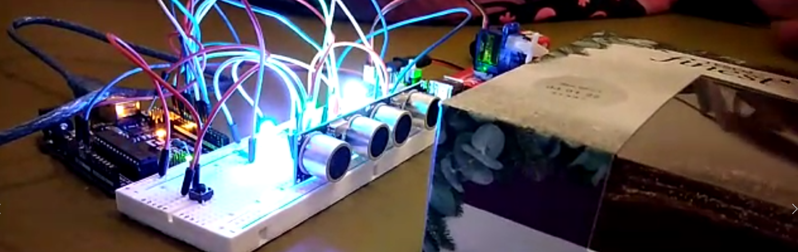

ALEXANDER ALLARDICE

Arduino Sorting Machine
The purpose of this University project was to demonstrate my skills using an arduino.
After being instructed to create something with an Arduino, I chose to create a parcel sorting machine that arranges by size.
Main Features
Ultra Sonic Sensors
The project uses ultrasonic sensors which detects the distance, estimating a size of the object.

Servo Motor
The servo motor rotates and stops each item while the sensors detect the size. Once the motor has detected the size it will rotate a certain amount of degrees to put the parcel in the correct location.

Pusher simulation
A light simulates a pusher. Once the parcel is in place after the servo has rotated to the correct place it will push the object forward.